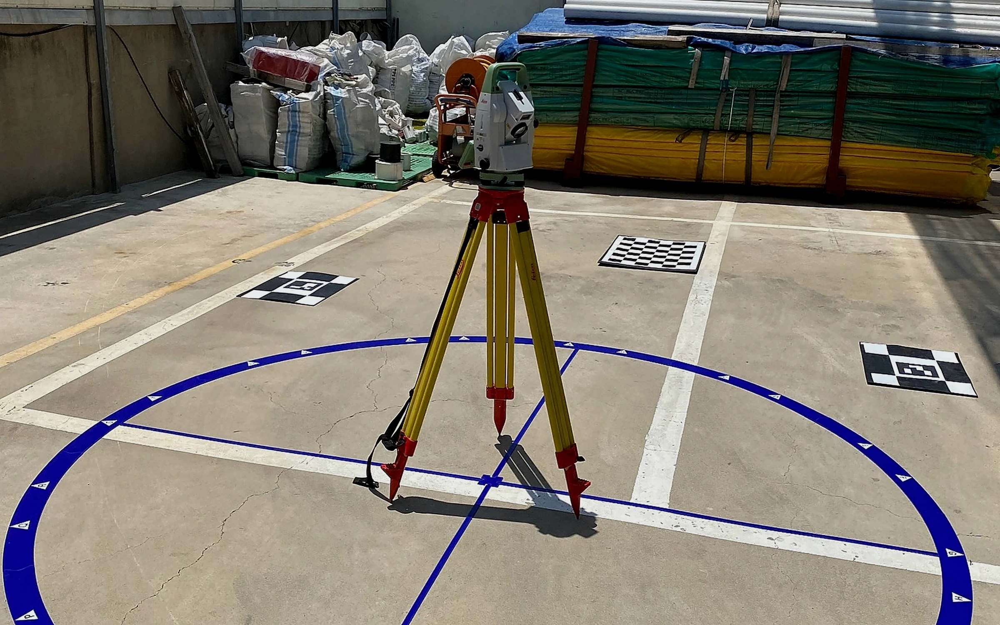
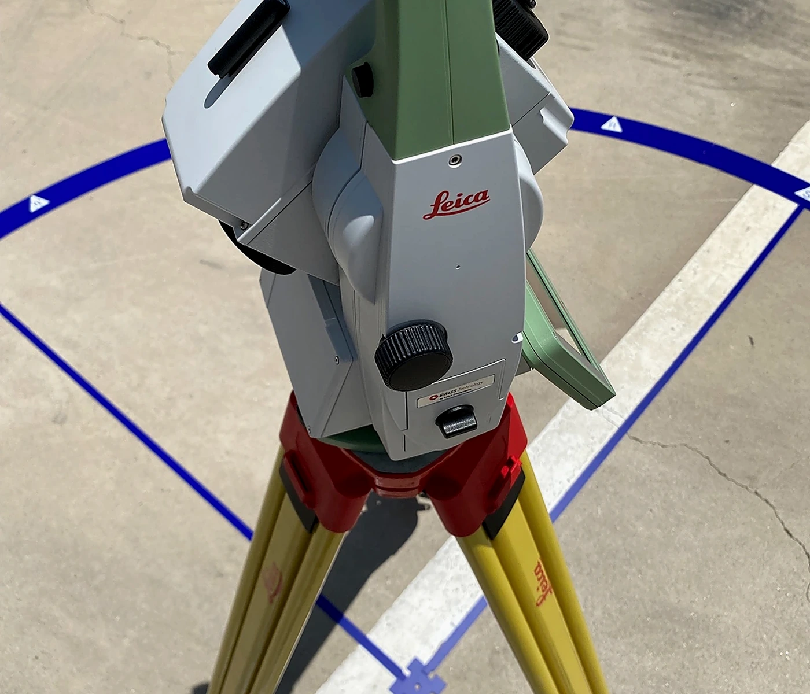
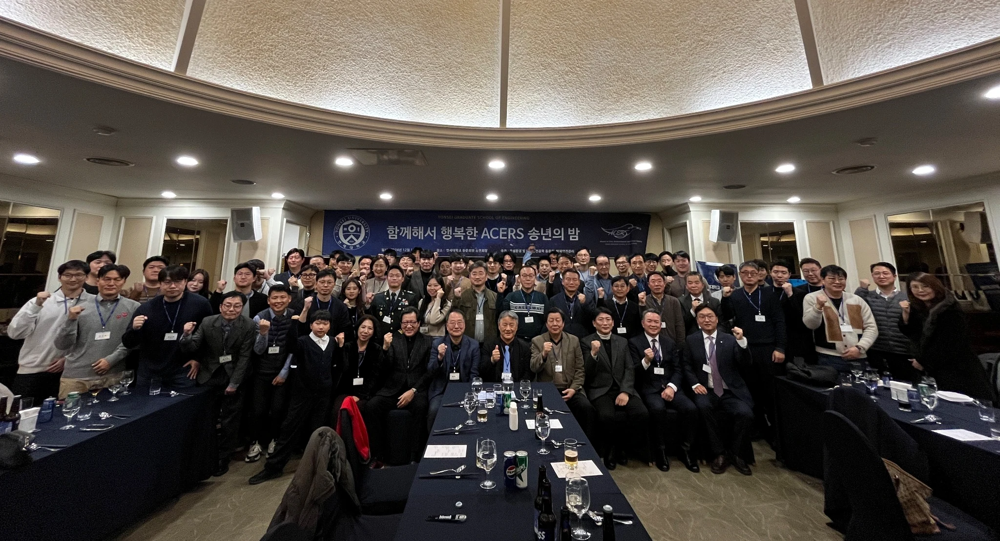

Keep the raw response separate from its interpretation.

Independent research platform
Research that survives contact with the field.
A public record of how spatial evidence moves between surveying, image geometry, industrial reality and accountable explanation — with the limits of every claim stated in the open.
JoosAtlas · Field proof 001
Local frame N 97.4695 · E 75.4718 m
Scale factor λ = 11/3
UTC 00:00:00
FieldPhysical datum first
ImageDeclared geometry
AuditSigned, traceable claim
StatusCase 001 under review
01 Premise
Not every precise-looking line is a measurement.
JoosAtlas begins with a refusal: an image is not allowed to certify its own interpretation.
Observation, reference and audit are treated as different roles. The distinction is methodological, but it is also ethical: a result should be presented only at the level the evidence can support.
That principle connects the laboratory, the industrial yard and public communication. Each environment imposes a different test on the same question: what makes a claim defensible?
The datum exists before the camera contributes anything.
Refusal is a result, not a failure.
02 60-second experiment
Local sensitivity
Two pixels are not two centimetres.
The same image displacement produces a different local ground consequence as the viewing geometry changes. The chart uses the three selected local inverse-Jacobian scales disclosed in Case 001 — hover any bar for its 5 cm pixel limit.
A fixed 2.0 px displacement, three viewing ranges
Estimated local ground effect in centimetres.
Scope. Selected local scales for educational comparison — not a complete-system accuracy specification.
03 Selected work
Case 001 · Spatial evidence
From a surveyed primitive
to an auditable boundary.
A physical geometry is established before the image enters the chain. A camera model carries the boundary into the frame; the observed response is returned to object space; the final discrepancy is audited with its sign intact.

Who is writing this
YONGHOE JOO주용회
I work between a laboratory and an industrial yard.
I am a Ph.D. candidate at Yonsei University, I am responsible for a steel pipe company in Seoul, and I serve as President of an engineering alumni association.
I do not treat these as three separate careers. JoosAtlas is where I try to make all three answer to one standard — and where I write down the things I cannot yet claim.
- Research
- Yonsei University · GIS Remote Sensing and Surveying Laboratory
- Company
- President · Daejin Pipe Co., Ltd.
- Community
- President · ACERS
- Contact
- daejinpipero@yonsei.ac.kr
04 Three worlds
One working standard across three environments.
Academic research, industrial operation and professional community are not separate biographies. They are mutually testing contexts.

Research / 01
Yonsei University
Ph.D. Candidate
School of Civil & Environmental Engineering
GIS Remote Sensing and Surveying Laboratory

Industry / 02
Daejin Pipe Co., Ltd.
President
Industrial operations, materials and field implementation.

Community / 03
ACERS
President
Alumni of Civil, Environmental Resilience Safety
Yonsei Graduate School of Engineering

Industrial reality
Operations are spatial systems.
Inventory, access, lifting, storage, safety and delivery all occupy measurable space. The operating environment is not a backdrop to JoosAtlas; it is where methods encounter consequence.
Daejin Pipe Co., Ltd.Operating site · aerial record

Personal field record
I am also the person doing the work.
That is me, in the workshop I also manage. I include it because it explains something about the work: handling the material changes which constraints I notice. JoosAtlas grows from that double position — measurement on one side, operational consequence on the other.
Workshop recordSeoul
05 Current coordinates
A growing atlas, labeled by evidence and maturity.
Nothing is presented as complete before its status can be stated precisely.
001Spatial EvidencePaper under review↗
002Fixed-Camera MetrologyIn development
LABIndustrial Digital TwinExploratory
TOOLSInteractive MeasurementPlanned
Research principle
Do not claim what the measurement chain cannot support.
Everything on this site is placed on one side of that sentence or the other.